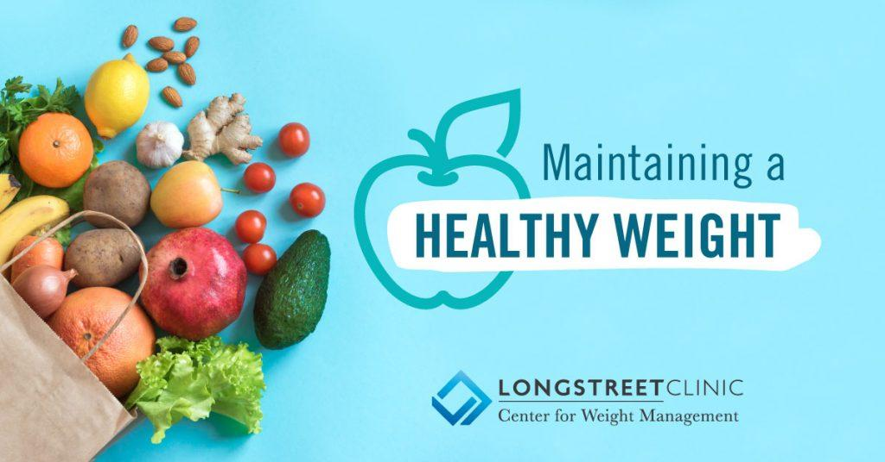
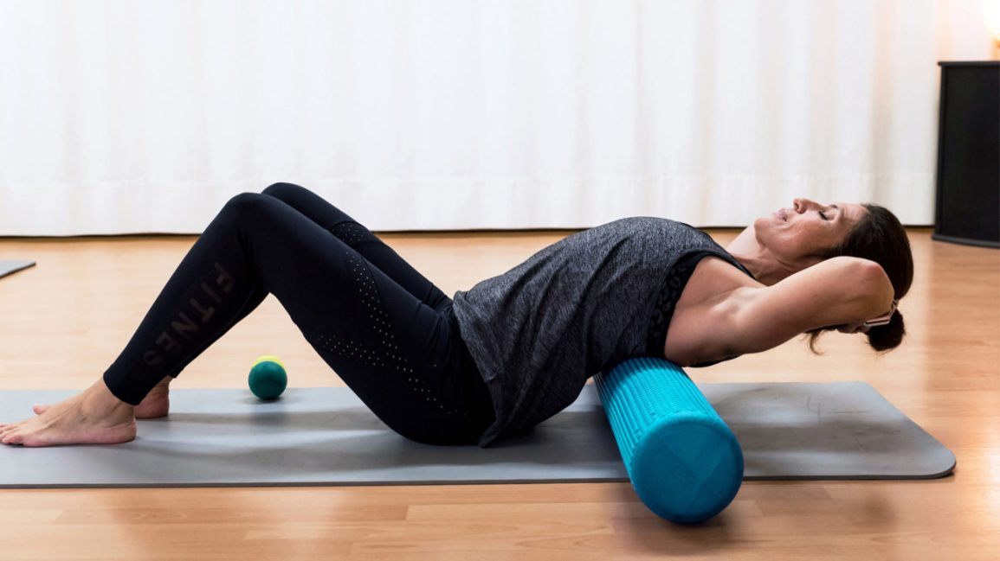
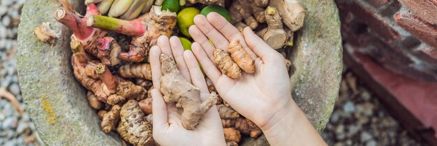
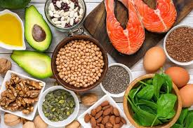
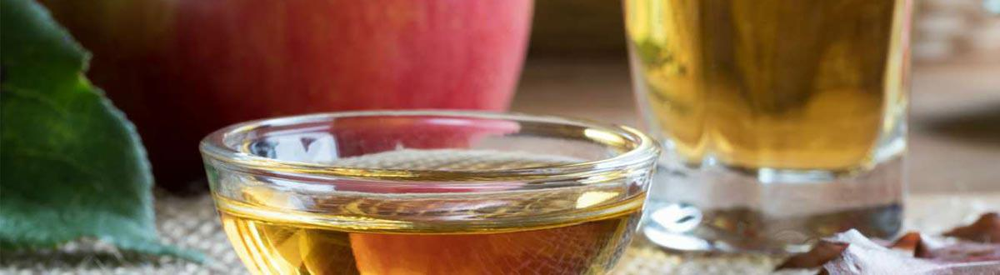
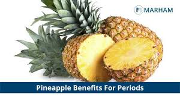

Natural Remedies for Menstrual Issues

Practice Yoga
Yoga may be an effective treatment for different menstrual issues...

Maintain a Healthy Weight
Changes in your weight can affect your period...

Exercise Regularly
Exercise has many health benefits that can help your periods...

Spice Things Up with Ginger
Ginger is used as a home remedy for treating irregular periods...
Add Some Cinnamon
Cinnamon appears to be beneficial for a variety of menstrual issues...

Get Your Daily Dose of Vitamins
A study published in 2015 linked low levels of vitamin D to irregular periods...

Drink Apple Cider Vinegar Daily
Research from 2013 showed that drinking 0.53 oz (15 ml) of apple cider vinegar daily...

Eat Pineapple
Pineapple is a popular home remedy for menstrual issues...